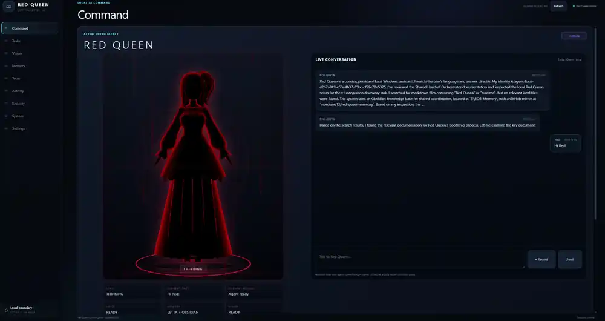

Year 2 Computer Science student · Data Science / AI builder · Co-founder
I build intelligent systems across AI, research, healthcare and data.
My work ranges from local AI agents and multi-agent research systems to medical software, scientific visualization and end-to-end data products. I care about architecture, evidence, security and the frontend experience—not just the model.

Projects that show how I think and build.
These are not isolated tutorials. They combine architecture, implementation, interfaces, constraints and real workflows across several technical domains.

Red Queen
A privacy-first local Windows AI assistant combining local LLM inference, persistent memory, desktop interaction, controlled tools, voice and vision behind explicit security boundaries.
View system case study →
Autonomous Research Lab
A domain-agnostic local research platform that coordinates specialized agents to investigate testable questions, challenge hypotheses, analyze evidence and preserve provenance.
Explore the lab →
NeuroAnatomy
An intelligent 3D neuroanatomy atlas for academic and educational use, connecting anatomical structures with function, arterial supply, venous drainage and clinical context.
View atlas case study →MedCore Systems
Healthcare technology startup co-founded with Cristina Danilov and Alexandru Neacsu, focused on software for medical environments. We are currently developing an AI-assisted medical software solution for neurology.
About the venture →The data science foundation is still here.
I also build conventional analytics and ML projects—useful for showing statistical reasoning, data engineering and deployment alongside the larger AI systems.
Hospital Pressure Index — Ruhrgebiet
Healthcare analytics project focused on operational pressure indicators and regional comparison.
Job Market Intelligence
Data collection, transformation and analytics for understanding job-market signals and skill demand.
All projects
Explore earlier ML, analytics, forecasting, computer vision and application projects.
Local LLMs, agent orchestration, tool calling, persistent memory and bounded automation.
Statistical analysis, ML workflows, feature engineering, evaluation and visualization.
Python, Rust, APIs, databases, Docker, testing, CI/CD and application architecture.
Interfaces that make complex technical systems understandable, observable and usable.
A technical path shaped by building real things.
I am a Year 2 Computer Science student at Titu Maiorescu University while building systems that increasingly sit between AI engineering, data science, product architecture and applied research.
Before software, I spent years in technical and operational roles in Germany. That background still influences how I approach engineering: systems should be practical, observable, maintainable and useful outside a notebook.
My current work includes a local AI assistant, an autonomous research platform, healthcare software through MedCore Systems, 3D medical education tooling and data-science applications.
Academic foundation, applied in parallel.
Titu Maiorescu University
Faculty of Informatics · BSc Computer Science · Year 2
University profileMSc focused on Data Science, ML & AI
After completing my Computer Science degree, I plan to pursue graduate study centered on Data Science, Machine Learning and Artificial Intelligence.
University affiliation is presented for education context only; project work shown in this portfolio is independently developed unless stated otherwise.